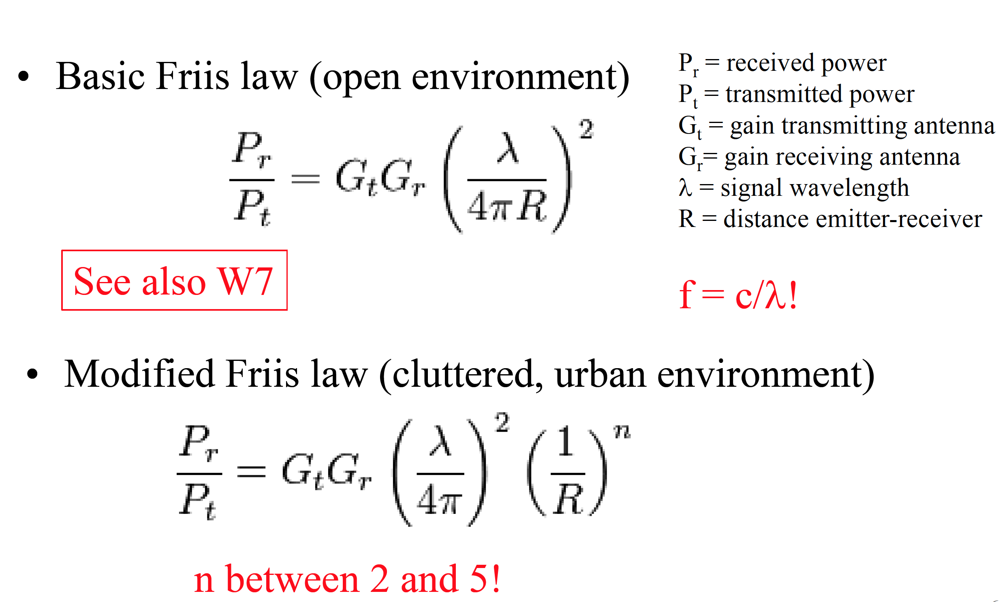
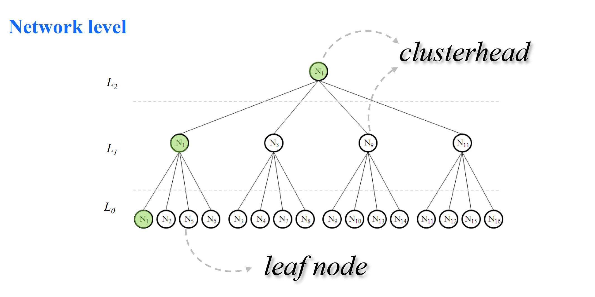
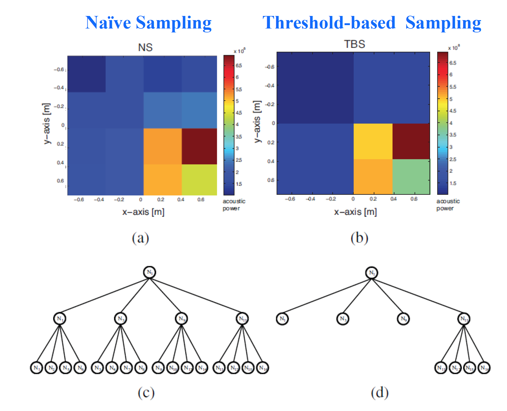
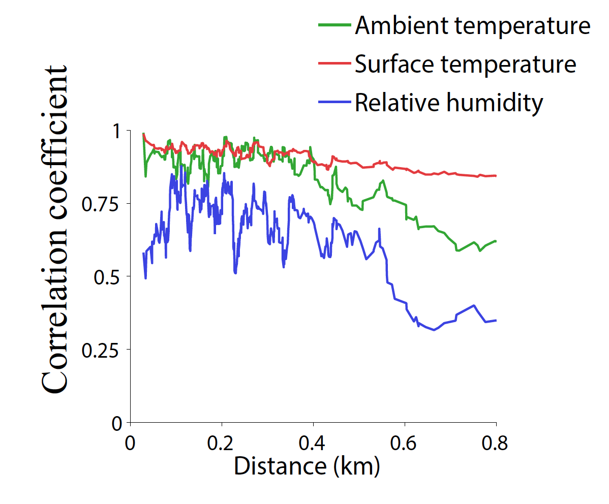

Distributed Intelligent Systems
Lesson 12 : Distributed Sensing using Sensor Networks – Power-Efficiency and Mobility
Basic principles for energy saving in static sensor networks
problems in DS
Distributed solution
- size
- number
- cost
- network
- mobile
Missions
- patrolling
- searching
- mapping
- inspecting
Physical field
- artificial / natural
- bounded or unbounded
- 2D/3D
Friis Laws

Communication cost >> computation cost
Not only transmission : transceiver dominated by listening.
Power-efficient resource management
Motivation from a DIS perspective
- Minimize energy use - Maximize field accuracy obtained
- Sample as little as possible in space and time
- Communicate as little as possible (# of messages, communication radius)
Clustering and pruning
Quadtree : hierarchical topology

- Layer increment: if all child nodes processed
- Idle node: if pruned by clusterhead
- Data: clusterhead replaces pruned children
Threshold based sampling

Temporal and spatial compression

Temporal and spatial suppression
- Temporal suppression : Has my value changed recently?
- Spatial suppression : Are my neighbors reporting similar measurements?
Efficient monitoring by checking only edge constraints instead of individual nodes
Constraint chaining
Use historical data to construct a MST (the "Conch plan").
No significant savings for small payloads.
Physics based modeling
Strengths:
- Well-established, can be extended with a chemistry module
- Cost-effective (only standard IT infrastructure on top of existing measurement stations)
- Natively designed for 3D field estimation
Weaknesses:
- Estimations instead of measurements
- Dependency on the existence and accuracy of an emission catalog
- Cannot capture real-time field changes due to peculiar events (e.g., emergency situations, special event in the city, traffic re-routing)
Conclusion
- Environmental data are (usually) highly redundant
- Embedded intelligence at the node/network level has the potential to remove that redundancy and save energy
- AI techniques have been studied in simulation but they are difficult to bring to real systems
- Design for dynamic environments is difficult because both dynamic environmental processes and dynamic network conditions must be considered
- Network stack may limit potential gains in energy saving of the intelligent algorithm; it is often a question of robustness versus efficiency
- Mobility in sensor networks offers wider coverage with the same number of nodes and can bring advantages in deployment, gathering, and maintenance operations
- Depending on the sensing modality and technology, mobile nodes can bring additional challenges that eventually results in additional complexity at the node level
- Increasing the resolution of air pollution data is necessary for understanding health impact
- Data quality is critical in these type of applications, so appropriate techniques for handling drifting, low selectivity, and mobility impact on low-cost sensors are key
- The OpenSenseproject gathered probably the largest dataset on urban air quality in the world and pioneered the use of public transportation for mobile sensor networks